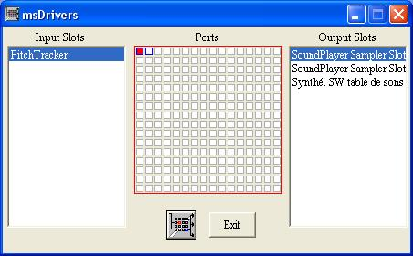

msDrivers application allows to configurate MIDI devices to be used by the software. Elody used up to 32 MIDI channels, that will actually use the MIDI port 0 and 1. In the central column, the port 0 to be used is selected. Then the available MIDI input devices (left column), or output devices (right column) can be connected. Same way for port 1.
The internal sampler appears as output devices named Sound Sampler Slot 0 and Sound Sampler Slot 1. By default, it is already connected to port 0 and 1.